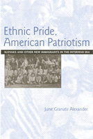

Creating a community that respected tradition but adapted to new circumstances
Creating a community that respected tradition but adapted to new circumstances


 Creating a community that respected tradition but adapted to new circumstances
Creating a community that respected tradition but adapted to new circumstances

|  |
Ethnic Pride, American PatriotismSlovaks and Other New Immigrants in the Interwar EraJune Granatir Alexanderpaper EAN: 978-1-59213-252-2 (ISBN: 1-59213-252-9) |
"Alexander's analysis and evidence is impressive. Ethnic Pride, American Patriotism explores Slovaks in the United States over three decades in a way that makes connections to other groups and to a range of issues in immigration and ethnic history. This book will speak to a wide readership, and it makes a good case that there need not be a fundamental contradiction between the 'ethnic impulse' and the Americanizing one."
—Thomas Dublin, Department of History, State University of New York at Binghamton, and author of Immigrant Voices: New Lives in America, 1773-1986
In Ethnic Pride, American Patriotism, June Alexander presents a history of inter-war America from the perspective of new Slovak and Eastern European immigrant communities.
Like the groups that preceded them, Slovak immigrants came to define being American as adhering to its political principles; they saw no contradiction between being patriotic Americans and maintaining pride in their ancestry. To counter the negative effects of the 1924 immigration law, Slovaks mobilized a variety of political and cultural activities to insure group survival and promote ethnic pride. In numerous localities "Slovak days" brought first and second generation immigrants together to celebrate their dual identity.
June Granatir Alexander's study adds complexity and nuance to entrenched notions of conflicts between tradition-bound immigrants and their American-born children. Showing that ethnicity mattered to both generations, Alexander challenges generalizations derived from "whiteness" studies.
Excerpt available at www.temple.edu/tempress
"Ethnic Pride, American Patriotism is a revealing and unique look into the dynamics of an American ethnic community during the first half of the twentieth century. Alexander focuses tightly on the Slovak-American community and its constantly changing political goals and social activities. In doing so, she is able to explain how this particular group creatively sought to construct an identity for itself in the United States and adjust to American life. The portrait here of a second generation not alienated from the first is vivid and fresh."
—John Bodnar, Chancellor's Professor and Chair History, Indiana University
"This thorough study of the Slovak groups can serve as a blueprint for other ethnic groups."
—The Polish American Journal, February 2005
"Polish Americans can learn some valuable things about themselves and their Slovak-American neighbors from this book."
—The Polish American Journal, January 2005
"[A] well-balanced, highly readable case study... Alexander has provided a useful approach to understanding the dynamics of accommodation, adjustment, and assimilation.... Recommended."
—Choice
"Ethnic Pride, American Patriotism succeeds admirably in shedding light on how Slovak immigrants and their children experienced America.... [It] is an important contribution to the field of American immigration and ethnic history."
—The Journal of American Ethnic History
"Alexander offers a nuanced understanding of the differences between tradition-bound immigrants and their American-born children."
—Contemporary Sociology
"Alexander provides a...complex story of ethnic activism, cultural pride, and dual identity... [she] provides an excellent account of how ethnic activists made a concerted effort to combine American popular culture with ethnic heritage in order to advance Slovak community objectives.... [T]his well-written account reminds us of the durability and complexity of ethnicity in America."
—American Historical Review
"June Granatir Alexander has written an important book that challenges many of the assumptions of recent whiteness studies. The great strength of this clearly written refreshingly jargon-free book is that it examines Slovak life on its own terms rather than from the perspective of some ideological construct that has little to do with actual lived experience."
—The Journal of American History
Preface and Acknowledgments
Introduction: Getting a Perspective on "New Immigrant" America
Part I. The Transatlantic Years: World War I to 1924
1. Hyphenates and Patriots: An Ethnic Perspective on the Great War
2. Unfinished Business: The Homeland, National Identity, and Americanization
3. Memories, Principles, and Reality: The Postwar Era to 1924
Part II. Turning Inward: 1924 Through World War II
4. Manifesting Pride, Power, and Patriotism: Nationality Days in Local Communities
5. Maintaining an Ethnic Image: Fashioning Nationality Days for Local Youths
6. Language and Leisure: Getting the Younger Generation's Perspective
7. Beyond the Generations: Ethnic Activism and Class Interest in the 1930s
8. The Triumph of Principles: National Unity and Ethnic Activism in World War II
Conclusion: Persistent Issues and New Perspectives
Abbreviations
Bibliographical Note
Notes
Index
 | June Granatir Alexander is on the faculty of the Russian and East European Studies Program at the University of Cincinnati. She is also the author of The Immigrant Church and Community: Pittsburgh's Slovak Catholics and Lutherans, 1880-1915. |
History
Race and Ethnicity
American Studies
© 2015 Temple University. All Rights Reserved. This page: http://www.temple.edu/tempress/titles/1739_reg.html.